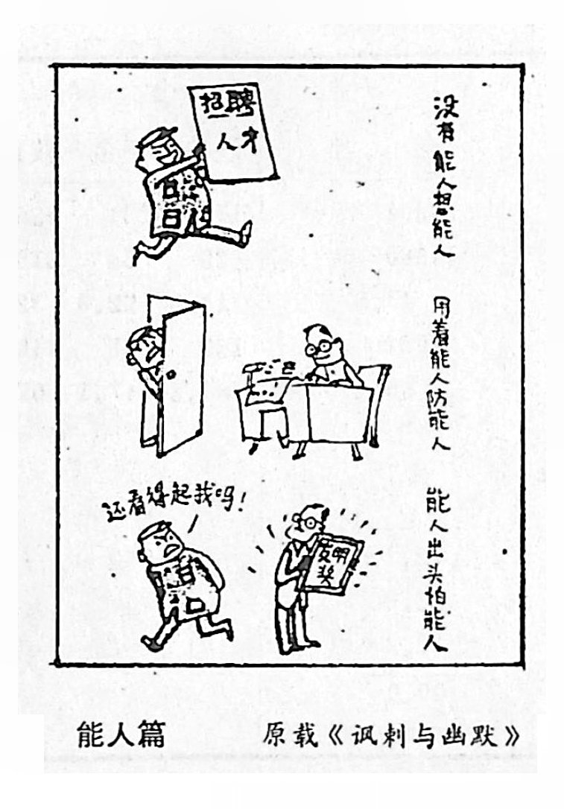

佚名 《人事》1986年第6期（总第9期），第44页（原载《讽刺与幽默》）
能人篇
On Capable People
- Text in the drawing
- 招聘人才 / 没有能人想能人 / 用着能人防能人 / 能人出头怕能人 / 还看得起我吗！
Hiring talent / Without capable people, you long for them / With capable people, you guard against them / When a capable person gets ahead, you fear him / Do you even think much of me? - Description
- Three rows of a talent seeker's progress: posting a notice to hire talent, then guarding against the capable person, then fearing his rise.
- Artist
- Unattributed 佚名
- Reprinted from
- 《讽刺与幽默》 — Fengci yu youmo (Satire and Humor)
- Published in
- 《人事》1986年第6期（总第9期）, p. 44
- Themes
- Talent and its neglect · Envy of talent

Cite
Unattributed, “能人篇” [On Capable People], Renshi (Personnel) 《人事》, 1986, no. 6, p. 44.